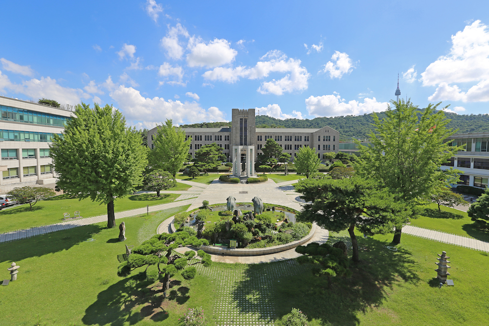

AI in Business: Intelligent Transformation and Management
AI in Business aims to bring together academics and practitioners to examine how artificial intelligence is reshaping businesses.
Since its inception, AI is now commonly found in a wide range of business domains, ranging from operations, customer engagement, and innovation.
This symposium will provide a platform to explore both the strategic implications of AI as well as the technological implications of AI to focus on topics such as use of AI in Strategic Decision-making and Forecasting, Operations and Intelligent Systems, Innovation, Ethics and Governance, Learning and Human Development, and Healthcare.
Topics
We invite contributions that align with the symposium's theme, including but not limited to: Strategic Planning; Sales/Demand Forecasting; Predictive and Prescriptive Analytics; Operations and Supply Chain Management; Automation and Robotics; Internet of Things (IoT) and AI Integration; Finance and Economics; Marketing; Human Resources and Behavioral Analytics; LLM Agents; Ethics and Governance; Other related topics in AI and business applications.
Format of Symposium
The symposium will feature a diverse program that includes invited keynote speakers, contributed talks, tutorial/workshops, social activities, and panel discussion sessions.
Attendance
Attendance is open to academics, practitioners, and policymakers working in the fields of AI, machine learning, and data science, as well as graduate students and researchers specializing in AI applications for business or related disciplines.
Submission Requirements
We invite submissions of abstracts (not exceeding 1 page) OR full papers (anonymous and not exceeding 8 pages, see templates in AAAI-25 Author Kit). Submissions are through the AAAI Official EasyChair platform.
Important dates
- Submission Deadline: February 6, 2026
- Decision Notification: February 20, 2026
Symposium Organizing Committee
|
Nahid Jafari
Associate Professor
State University of New York-Farmingdale, USA
General Chair
|
Hyejin Cho
Associate Professor
State University of New York-Farmingdale, USA
Co-chair
|
Mohammed Quazi
Assistant Professor
West Virginia University, USA
Co-chair
|
Symposium Supporting Committee
- Amine Aboussalah, Industry Assistant Professor, New York University, USA
- Bruno Kamdem, Assistant Professor, State University of New York-Farmingdale, USA
- Alladoumbaye Ngueilbaye, Associate Researcher, Shenzhen University, China
- Helper Zhou, Research Fellow, University of KwaZulu Natal, South Africa
- Swaraj Kate, Supply Chain Analyst, Bell Equipment, Germany
Schedule
Day 1 – June 22, 2026
| Time |
Session |
Speaker |
| 09:00 – 10:30 |
Session 1: 3-4 Presentations |
TBD |
| 10:30 – 11:00 |
Coffee Break |
— |
| 11:00 – 12:30 |
Session 2: 3-4 Presentations |
- |
| 12:30 – 14:00 |
Lunch Break |
— |
| 14:00 – 15:30 |
Workshop 1: TBD |
Mohammed Quazi |
| 15:30 – 16:00 |
Coffee Break |
— |
| 16:00 – 17:00 |
Invited Speaker: TBD |
— |
Day 2 – June 23, 2026
| Time |
Session |
Speaker |
| 09:00 – 10:30 |
Session 1: 3-4 Presentations |
TBD |
| 10:30 – 11:00 |
Coffee Break |
— |
| 11:00 – 12:30 |
Session 2: 3-4 Presentations |
- |
| 12:30 – 14:00 |
Lunch Break |
— |
| 14:00 – 15:30 |
KAIST AI Lab |
Hyejin Cho |
| 15:30 – 16:00 |
Coffee Break |
— |
| 16:00 – 17:00 |
KAIST AI Lab |
Hyejin Cho |
Day 3 – June 24, 2026
| Time |
Session |
Speaker |
| 09:00 – 10:30 |
Session 1: 3-4 Presentations |
TBD |
| 10:30 – 11:00 |
Coffee Break |
— |
| 11:00 – 12:30 |
Session 2: 3-4 Presentations |
- |
| 12:30 – 14:00 |
Lunch Break |
— |